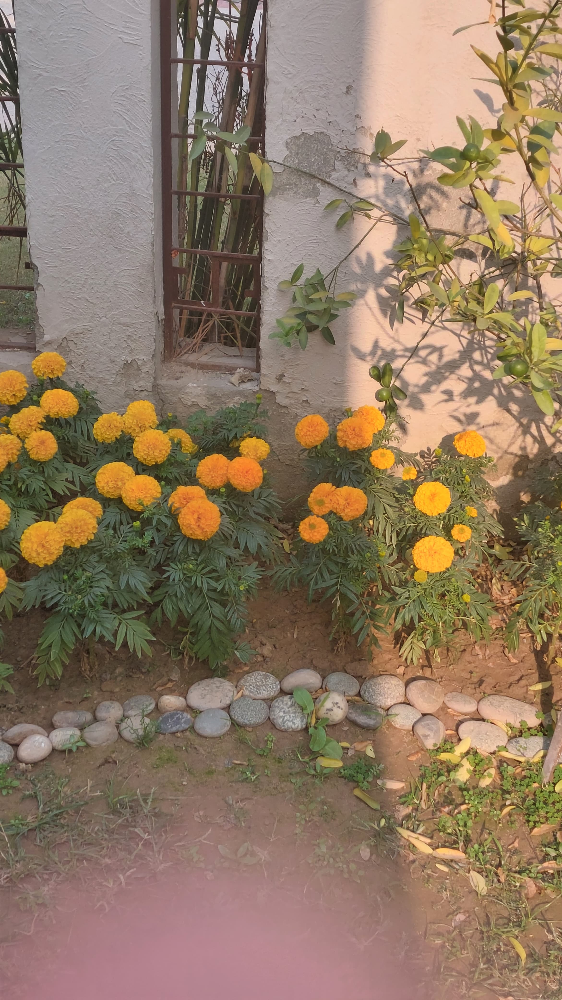
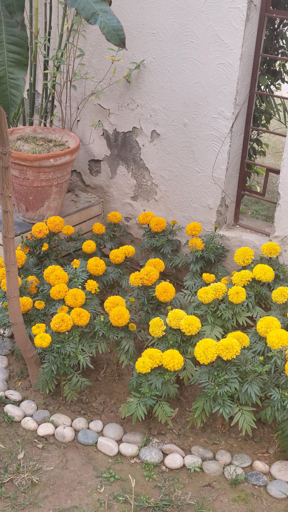

Untitled #3
Hey Rummie, I hope this email finds you well. This is not the date that I said when we met that I know exactly to send you the email on. But like I said to you, there is only one day that you get in a year aur woh us say hi hota jis se insaan pyar krta hai. So this is for you. The assumption here is that I send this to you exactly on my birthday. But writing this now, I'm not even sure if I will send it to you on my birthday. There is also a lot to say, a lot to tell, a lot to make sure that I am conveying correctly, completely, and accurately. Maybe sending it to you on my birthday would seem too selfish. Maybe I'll send it to you after my birthday. Maybe before. Regardless of when I send this to you, when you receive this, please read all of this dil aur dimag dono khol ke. Easy ho kay, chai le ke, with the lollipop and the bird that I gave you, beth ke, without anything else in your mind. Preferably, please read this at night when you are alone, have nothing to do, and there is no one to bother or disturb you. If you see this email during the day, please resist the urge to read it through. Try to read at night. Also, if you had a long day, are tired, annoyed, not feeling well, or angry for koi bhi reason, don't read!!! Save this for a while later. I've been journaling. Like I said to you when we met, you are such a big part of me that even if I write something personal about myself and how I am feeling, I would want to share it with you. Take photos of all of it and send it to you. I will be attaching my journal here in the form of pdf. It contains a lot of stuff, lots of musings and ramblings. I am sorry. I don't know how you will feel after reading all of it. I read it and it seems insane to me. But please don't read it right now. Near the ending paragraphs of this email, I'll ask you to read it. I think it will be better if you read it by then. There is a specific structure in which I want to present all of this to you, and I fear without that structure, the impact that I hope all of this to have will be affected. I hope you haven't clicked on the attachment in the email and started reading the journal directly without getting to read this paragraph. But even if you have read the journal already, that is alright. But please, read on. Aside from journaling, I've been okay. Watching a lot of movies and just thinking. Not much to say. How are you? How your friends, how family, how university, how studies, how health, how is everything? I hope you are doing good, eating well, sleeping well, and having joy and khushi. It is an overwhelming feeling to not know about how you're doing, and what is going on in your life. I get the urge everyday to text you and ask you how you are and how everything is. I miss you. It's unfair to you how I have been thinking a lot about us and you haven't had the luxury of a quiet home environment to really think about all of this. At least you didn't when we met. I wish that wasn't the case. You do not deserve that. I hope things are quieter, and have been quieter, by the day you receive this email. Your university is also keeping you busy. With your exams coming up, there is probably a lot going on in your mind, so many things to keep track of, so many things to worry about, so many things to do. As I write this, someone is having a party in my neighbourhood. I can hear the songs in my bedroom. One song that is playing is Jinne Mera Dil Luteya. Hearing it, I can't help but smile and think of you. Tussi waqai shahed toon vi mithiyaan galaan karde ho. Twadi har gal shehad toon mithi hondi ae. This is what I was referring to when we called. You said that you're sweet and I said that there is something very similar to this in the email that I'm writing. When we met, you said some things that I have been thinking about. You talked about what your mom says. Pyar se ghar nahi banta. Or when she wants to be mean she says, "Ishq se ghar nahi banta." You said that to me like how someone would deliver this line in a Pakistani television show. It was really funny. You said that this is broken, and even if you came back it would still be broken. You also said to me on text when I was talking to you about how I am having realizations, out of all of things in the whole wide world, about Urdu poetry, you said that there is no solving us. It's funny disagreeing with you when you are always right. But sometimes, you are wrong. I feel like I have said a rude thing. I'm sorry. But believe me, with this, I know for a fact that the case is opposite. I talked to you about how if pyar se agar ghar nahi banta, toh foundation toh ban jati hai. And you said woh hai lekin uska masla bhi nahi hai. That I keep saying that see my heart and the love that it harbors for you when in fact it has never been the problem. That you know that I love you and you have never doubted it. But with this thing, that is not the problem and me saying that will not solve it either. Pyar se agar ghar nahi banta, toh foundation ban jati hai. Deewaren aur chatt sincerity, genuineness, care, aur efforts se kharay ho jatay hen. Interior pesay se ajata hai aur paint chotay chotay pyaray moments aur yaadon se ho jata hai. Humaray paas foundation hai. Chat aur deewaren bhi hen. Paint bhi hai. Interior nahi hai. Humari deewaren, chatt, aur paint kisi had tak proper nahi rahay hen. There hasn't been requisite care from my side. There haven't been more of chotay chotay pyaray moments from my side. And that has allowed the rain, deemak aur insects to creep in, in the form of hurt and disappointment. There is a question that our egg asked (you still haven't apologized to him for cursing at him) that in what ways do you think you're similar to your partner. We're alike each other in many ways but in one way that we are it is that we are both pessimists. At least to some extent. With this entire situation, in addition to all your concerns and tiredness, you feel that even if you do make an effort to give this another shot, it would never ever work out. It would just be you being hopeful, just to end up being disappointed. You know that that is what is going to happen. So why put yourself through that? Why go against what you promised yourself seeing your sister go through what she went through, what she is still going through, when you know that that is what is going to happen? That we can't work out? I think that is a reason why you feel that your heart is divided. I tried to say this when we met but I guess I didn't know how to phrase it. Maybe I'm still not phrasing it correctly. But I think that the difference between us and those abusive relationships is that we always have, still do actually love and care about each other. Our love has not transformed and maligned into a twisted, rotten, malicious, malignant form. That will never be the case. Over these 5-6 months, my love for you has not nudged even the slightest bit. I can't speak for whether you love me or not but I one hundred percent speak for myself when I say that I do. My love for you, fire for you, is still as strong, fire still as wild, as they were when I first said to you that I loved you. If anything, this love has only gotten stronger, and this fire wilder. You said to me that you don't want anyone to take it for granted, for no one to "become easy" with their treatment of you. Having been in one sort-of relationship which was abusive where the person was completely unapologetic in the way they treated me, I understand what you say. Only a person who has went through something like that can understand it. But I am not a person who is like that. I am not someone who stops caring about how they are with another person. I feel bad whenever even a little hint of annoyed-ness creeps into the tone of my voice when I'm talking to someone. Whenever I'm driving and my nephew is sitting in the seat behind me, he stretches his legs onto the back of the driver's seat. His feet push the back of the drivers seat and I can feel them sticking out behind me. It gets uncomfortable. But I have never said a word. When I was little, I did the same thing once and my dad was driving. And he told me not to do that since it made him uncomfortable in the driver seat, much in the same way that I'm uncomfortable when I'm driving and my nephew does that. When he told me not to do it, I kind of felt a little scared. My intention wasn't to make him uncomfortable. I didn't even know if the person in the driver seat could feel that. It was me just playing. But I never did that again. To this day, I remember that incident. He almost certainly would not remember it. But I do, and I don't want my nephew, or anyone else for that matter, to feel the same way that I felt. I make a conscious effort to not be like that, to not be like someone who treats others in a shitty way. I remember when we had the fight about the covering up wali cheez. I wasn't talking to you and you said that that made you anxious. I asked if you were feeling anxious now (because I wasn't speaking to you us waqt) and you said yes. The shame that I felt was immense. The regret that I had that I am becoming like the person that abused me, and to see you go through a fraction of what I went through, broke me. Some people lose sight of that, they let their hearts become stone. I know that I cannot be like that. And I certainly know that you cannot be like that either. It is not in our nature. When a house has deemak or insects and cockroaches, people don't leave it forever. They try to kill the insects with Mortein or what-have-you. They leave it for a part of a day so that fumigation is done and the insects and the termites are gone. They don't sell the house away. There are these insects and termites in our house too, but these insects and termites cannot eat through our foundation. We can paint over the faded areas of the house, put the few bricks lacking in the walls, and plug the small holes in the roof. The house is not completely unfinished or not built at all. It is not broken. And if you come back, it will still not be broken. It is built, but I can't deny that it is in need of some repairs. It is not just a house, it is a home. Home is where the heart is, and my heart belongs to you. The most important thing in the structure of a building of a house or a building is its foundation. The foundation bears the weight of the entire structure, it is the one thing that provides stability to all of the other elements in the structure of a house or a building, the walls, the roof, the windows. If a building has a faulty foundation, it can't survive at all. It's a hazard. It's closed down until the foundation is fixed. Otherwise, there is no telling when the walls and the roof collapse. It performs such basic functions that people don't even think about it. Strong foundations prevent the house from shifting, and sinking and settling into the ground. Foundation repairs are a whole another things. They are the most expensive repairs to have done on a house because you have to be very careful: such repairs require extensive engineering and architectural knowledge, not to mention the complex excavation equipment that is required. Foundation work is much more expensive as compared to repairs of walls and roofs. The point that I am trying to make here with all this apparently meaningless stuff that I am saying is: our foundation is solid. The reason why I keep bringing up my love for you, or in this analogy, the foundation of our house, is because I have read and heard countless stories of people who are in loveless relationships and marriages. People who don't really love each other at all, houses whose foundations are so weak that might as well not exist. Countless cases I have read of two people not in love, staying together for whatever reason. Sometimes, it's because of the kids. You and I both know that that is not a healthy situation to be in the first place. Other times, it's because of family, society, culture. It's heartbreaking to see such relationships which are devoid of love, standing on nothing but thin air. There are flaws in our home, yes, but the one crucial element in our building is solid. It is my fault that there are these flaws in the first place. However, I know for a fact that these flaws can be repaired. I don't wish for us to demolish the building just because there are flaws in it, despite it having the strongest foundation. But for me to do that, I have to show you that me saying that I can repair these flaws is not me just spouting whatever, stringing together pretty words, all just to make you stay. This is what I have been trying to show you. That there is so much love between us, so much. That this love is my guide in making these repairs to our house. I won't be making any reasons up denying the existence of these flaws because that would just be straight up shitty and wrong. They exist. But for me to begin fixing them, I have to ask this of you that at least believe my love for you when I say that I will repair. Our home is a beautiful one, it's just marred by a few things. You and I both know that these marks on our house are not made by a permanent marker. They are certainly able to be removed and erased. You ask me what reason in the world I have for putting any more effort into this than what's necessary. And I tell you that I put in the effort because you don't see yourself with my eyes. Because of that you cannot understand why I want to put in the effort, why I am still fighting for us. As you cannot understand, you take my words to be out of desperation and desperation only, that the transition is hard for me and I will say anything to make you stay. You comfort me, you hug me, you give me pyaar, you care about me because you know that I am not coping well. But I don't think you really understand why I haven't been able to cope well. You said that pehle bhi toh you had said there is no light at the end of the tunnel. I had accepted it then, so why don't I accept it now? I didn't know anything about you then. I'm not only talking about your life events, the experiences that you have had, things about you like your interests, views etc. They are all a certainly a big part of that, but there are some things about how another person is that you just acquire. Some things you know without them even having to explicitly tell you. These are things that are unsaid, but are said without the need to say them. Our pattern app said that you are a positive, guiding force for me. You know that I am not really one for horoscopes or star signs or birth charts or what apps like these say about people, but this one has been completely true. We were once talking about people identifying different than what their birth gender was, and I either asked you what about people who identify as a race other than what their race is or about people identifying as objects or something, and you asked me how many people I have met who identify as that? You said that this is only a handful of people among the countless millions and this is an argument used by assholes to justify their transphobia. A while later, I went to see my friends. We were in Bahria Town, driving back after getting petrol. There is only one petrol pump inside the entirety of Bahria Town, in the middle of nowhere. Shahzaib was driving and they started talking about this exact thing. They said they saw a reel in which the person identified as a banana and were using that to say that they wouldn't support people who are trans or identify as any gender other than what their birth gender was because they said that it was non-sensical. They said that, if we start supporting people like this, then they will start identifying as absurd things. Will we support them in that too? And I asked them how many people have you met who identified as a banana or something? To dismiss the countless people who feel like they are different than what society expects or wants them completely, and that too to be based on 1 fucking insta reel is insane. In the middle of nowhere in Bahria Town, sitting in that car, among three other people who all had the same bigoted view about what we were talking about, I was the voice of reason. Because you had educated me, you had given me the tools to work against this type of shit. I get to learn a lot from you. Every time I'm on the road and a beggar comes up to me, I give them money. You told me that they need it more than us and that is what goes through my mind every time I see such a person on the street. I keep change exclusively in the car for this reason. Whenever I have notes of 100, 50, 20, 10 however much, I keep them in this little space next to the steering wheel and give them to a beggar who comes up. Your red, communist heart inspires me. You will probably chuckle after reading that last line, but I am saying that with utter sincerity and complete genuineness. You have genuinely made me into a much better person than I was before meeting you. When you meet someone like that, someone who you love and care for, someone who loves you and care for you, someone who makes you a better person, you know that it is special and not just something that once happened to you in your life. It is not something that you can forget, nor something that you want to forget. It is beautiful, wonderful thing that you cherish and hold close to your heart forever. A while back, I went on this nostalgia-trip of listening to all the songs that used to play in GTA San Andreas. In the game, whenever you're driving a vehicle, the radio plays and it has different radio stations on it playing different genres of music. One station would play old country songs, one would play rap songs, one would play rock songs and so on. I have played that one game a lot of times. I have completed it at least 7 times from the beginning to the end. It is at times a very therapeutic game as well because in the game, you can just get on a bike or in a car and drive from one city to another at high speeds, listening to music, moving from one city, across the countryside, to another city, across the desert, and into another city. You know how people go on a drive to clear their minds? I used to do that in this game. I also played a lot of this game as there was a mod which made the game multiplayer, so you could be in a world with hundreds of other players from around the world and roleplay. I would be a police officer, a criminal, a pilot, and at times a truck driver making deliveries all across the world of the game. Ask me about this and I will go in much more detail as I spent a lot of time playing and doing jobs in the game on this one multiplayer server. Made a lot of friends there as well. The point of all this is that in all of my time playing this game, one thing would be constant: the radio. It would play all the time. So much so that I had songs memorized by heart. I went on a nostalgia trip hearing all of these songs again. And listening to all of these songs, all I could think of was you. One specific song stands out. Some Kind of Wonderful. I have added it to the playlist I made for you. You really are wonderful in my eyes. There is a little garden in the lawn of my house. My mom and dad take care of it. They have planted guavas, and lemons in it. There are also flowers. Genda.  Please ignore my finger at the bottom of the frame, I'm just realizing that my finger is in the photo.  It's really a sight seeing them, especially on a clear sunny morning. The high noon Sun shines down upon them and their yellow color becomes even more vibrant and vivid. I don't know how long they have been in the garden but I have only really noticed them recently. It's kind of weird how you are often blind to the nature around you. In this case, it was literally inside my home and I didn't notice. But I guess even when I did notice them, I didn't really see them. In all their beauty, their striking yellow, the first thought I thought of was you. One of these in your hair, over your ear. You sitting down beside them, trying to pluck one. That's all I saw. As beautiful as these are, you are many times more beautiful than the prettiest flower in the world. The way you smile, the hint of a cleft chin that you have, the mark on the side of your face, the way your eyes move and react to words, the way you smile and shy away, your voluminous and luxuriant hair, how pretty it looked when we were sitting at Howdy and the sun shone through your hair, the moment your lips split in your smile and your teeth are naked. It is such a beautiful sight, it enraptures me. Everything, everything about you is gorgeous. I see you in everything. Roses and nature is obviously the most likeliest place that I would see and find you in, but I also see you in the unlikeliest of places. I mention this at a point in my journal. Once you go through it near the end of this email, you will see what I am talking about. Every movie that I see I feel the urge to show it to you. I was talking to you on call and you said that I was teasing this email like how a director would tease their next movie. I said to you it's weird that you mention it because there is going to be a reference to this in the email. Whenever I see Greta Gerwig and Noah Baumbach, I think of us. I was watching the Variety Actors on Actors video in which Margot Robbie and Cillian Murphy interviewed each other about their careers, their process, and Barbie and Oppenheimer respectively. Murphy asks Margot Robbie what it was like working with Greta Gerwig. She talks about how she felt when she first read the script, how funny she found it, and how she knew that she wanted to work with Greta Gerwig on this movie. She talks about Greta Gerwig's and Noah Baumbach's writing process and how they wrote Barbie together as well. She says that they don't really plan the story, they write about it as it comes to them. They don't really have an event in their mind that they are building towards, some point in the story in which something happens to the characters. They don't have that in mind when they start writing. Instead, they go through it in a linear fashion without planning ahead. I remember when I was telling you the story of the little girl named Anna, you said that it was a great story. I told you that I just came up with it. During all of the times of me telling you the stories of the exploits of Farid and Rimsha as well, I was telling it to you as it came to me. There was never any big thing that I had in mind. Much like how in real life, you don't really know what's going to happen when you go on a trip. It happens as it comes. That's how Greta Gerwig and Noah Baumbach tell their stories, and that is how I have told every story that I have ever told you If you look at the photos of Greta Gerwig and Noah Baumbach, you'll see that Greta is much more out there and looks excited in every photo while Noah apparently looks like he is shy, reserved and doesn't wanna be in the photo. You and I could be any one of these, and we are, every time. You are like Noah at times, and I'm like Greta at times. Both of them love movies. Both of us love movies as well. One of the very first songs that you added to the playlist that you made for me in February was "Movie" by Tom Misch. I listened to this playlist so much, I would be driving my family somewhere with my sister sitting in the passenger seat next to me, and this song would be playing. And I would be thinking that I hope she hears the lyrics and says something about the song, I hope she asks what the name of the song is. Even then, I loved every song on this playlist this much. Anyway, I'm getting off track. This is just a thought that I have when I look at this couple, they remind me so much of us. There are so many little memories that I have of us. So many little things that I know about you, so many little things that keep occurring to me, so many things that I hold dear to my heart. The time when I was talking about Macbeth and quoted a line from the play/movie, and I said I am saying this at the risk of sounding pretentious. You replied and said, "it sure is a gamble." The time when I was running in Red Dead Redemption and you said "bhaago." The time I told you about my sect and you were not only accepting but also understanding, which no one ever has been. I talked to you about this as well. The time when I introduced you to this Punjabi song "Udaarian" by Satinder Sartaj and your mom got hooked on it. She would ask you to play it all the time, so much so that you got tired of the song itself and started hating it. You said to me that you would love to read Punjabi poetry. This song is a great example of that. Really beautiful lyrics. All of the times that you have opened up to me. All of the times that I have opened up to you. All of the times that we have gone to see a movie. That one time when I had a paratha roll, and I told you and you said that you had one as well. All of the times we have met and we were wearing shades of the same color. This happened when we met at OPTP as well. There are so many similarities with us. We were both born in an even year (2000, and 2004), in an even numbered month (10th, and 12th), on an odd date (15th and 21st). I was born on a Thursday, and you were born on a Friday. Right next to each other. We are both introverts with strikingly similar views. We both normally tend to avoid talking about our families, There are so many memories that I have with you. All of the times that we used to talk till late at night. So many long calls. It's kind of funny how you have an issue with memory and one of your favorite movies is also Eternal Sunshine of the Spotless Mind. I carry so many memories of us that I think about them constantly. Through no fault of your own, you are kind of in a better place with your memory. Your brain can forget certain memories. With time, maybe you won't even remember I existed. It took a lot to type that out. A lot. But I guess that is the nature of memories. Our brains are programmed to work like that. For better or for worse, I don't know. I don't want what we have is to be consigned to the fate of just being a memory. It is more than that. It is so many times more special than that. It is wondrous. It does not deserve such a fate. At OPTP, I asked you don't you get dar that my feelings for you will fade? Because I think about that constantly that your feelings for me will fade. You said that you know that it's going to happen, and you don't think about it because that'd be just like torturing yourself for no reason. But I guess that what I was asking was this: don't you ever think of the memories that we have? All the love that I have for you and whatever fraction of that that I am able to express, don't you think that you don't want to lose that? Don't you think of my voice, how I type and say certain words, how I call you pet names, how I describe a fraction of what is in my heart for you, don't you think that you don't want to lose that? That you don't want someone else to have that? Because I think about all of this about you. I think about this constantly. At OPTP, you mentioned that Hassan likes you. And I felt my hands become loose, like something had just left my body. I had The Myth of Sisyphus in my hands at the time and I kept thinking about how I was reading this book when we first started talking. I flipped through the pages of the book while sitting next to you in that restaurant and I kept thinking how I was reading through those very same pages and you had asked me how I had liked that book. How I had told you that now I'm reading The Brothers Karamazov by Fyodor Dostoevsky and how it's really long. You had said to me that take your time to devour it. I kept thinking about all of this and my eyes welled up. There are so, so, so many things that I hold so very close and dear to my heart like this. You wouldn't even imagine that I would be cherishing things like these seemingly inconspicuous and insignificant texts that you had sent me without even thinking about them twice. But here I am, with all those texts, all those songs, all those calls, all those conversations in my heart, keeping them safe and warm inside my heart. Any song that I come across, any movie that I see and like, I know that my enjoyment of the movie and the happiness or joy that I gain from listening to the song or watching the movie would increase ten fold if you also listened to that song, if you also watched that movie. I don't know, but sharing all of what I love with you increases my love not only for you but also for whatever I share with you. Because I feel like I have made immortalized it in a way by sharing it with you. That goes for all of the things that I have told you about myself as well, albeit sometimes in a different way. For instance, just like how sharing good and fun things with you increases my happiness, telling you weird or bad things that have happened to me takes the edge off of those bad things. It makes me more accepting of those things as a result. The same happens whenever you do the same with me. Whenever you tell me little things about yourself, like how at one point you were obsessed with Camila Cabello, how you really like Keira Knightley, whenever you tell me about your day and say to me, "you know what happened aj?" How you say giggling, kicking my feet, chewing my hair. All of these things I keep with me, and in sab cheezon se mera khoon barhta hai. I feel like my heart becomes more red, and I get more younger every time you share some thing with me, or I share some thing with you. Is this not love in it's purest form? I do not want to hurt you, ever. I love you. You are a witness of this yourself, you have seen in person how much my heart loves you and how much my heart is repentant and wishes for you to stay. You have had me cry in your own arms about how much I love you. I know you hate it when someone takes your name, but Rimsha, that is something so rare, beautiful, and wonderful that we would be fools to let that go. Some thing so rare that it is indeed once in a lifetime. I am proud to have cried in your arms about how much I love you, and at same time, I feel heartbroken that I have no idea how much your own heart ached during that. That it loved me too and wanted to convey that to me but thought it best that it didn't. Because it saw all of the reasons why you said that you wanted to breakup in the first place. It saw all of the hurt and disappointment. It saw all of the things that brought out reactions in you which you don't like. All of the things that made you feel a certain way that you don't want to feel. And it saw that the only way to avoid those feelings, those reactions, those emotions would be to end things. Your heart does not want to go through all these things anymore. And it won't. The love that I have for you will make sure that never happens again. I see you, your heart and its beauty makes me not stop trying, because I know that I want to take care of it, preserve it and have its light with me. It will not ever, not in a thousand billion years, make you feel some thing that you hate yourself for feeling, that you hate me for making you feel. Some thing that makes you regret ever having belief in me. It is not that I don't understand what you are going through. That I don't see how much pain your heart is in, how difficult all this is for you. I see what you think of when you think of giving what we have another shot. What you think of when I say that the little flaws in the paint, the walls, and the roof of our house are in need of some repairs. How your heart is split right down the middle, how confusion clouds over everything and the only lit path that you see is the one where we each move on without each other. How your heart thinks that that is the only way forward to not only preserve the good of what we have but also to secure your own peace. How your heart feels that it can't ever be happy in this relationship because of all that has happened, and all that you fear will happen. I admit that, unfortunately, my words will hold no meaning for you. I have been telling you that I truly do love you, and you have seen it for yourself as well. That given the chance, I will never even think about squandering it. But saying all of this holds no meaning. You have to experience it to believe it. You have to see it through my actions to come around to thinking that, "Maybe there is some weight in what he's saying." Seeing is believing. And you're already asking a lot when you ask someone to believe what they can only hear. Because then, anything can be said, everything conjured. This is one of the many major problems I have with religion as well: you can tell people what you think will make them want to continue having the thoughts and ideas that you want them to have. Given enough incentive (which religion certainly more than does so), people will do anything. You can tell them that, "Hey, look. In the end, everything will be alright. Just listen to what I am saying, do this exactly like how I tell you to, and in the end, you will be rewarded with 72 virgins." You can say, "Not seeing God and still believing in God is what true belief really is. Just do what I say, have the views and values that I want you to have, and you will have everything that you have ever wanted." The incentive given is so strong that people overlook the major asterisk attached to this incentive. They forget to read the fine print that says, "but only once you are dead and buried." Language is the devil's brush, words his palette, and the mind his canvas. On a side note, I personally think that depictions of Satan in media, movies, and video games are really cool. The devil in The VVitch (2015), Norm Macdonald reciting The Devil & Billy Markham by Shel Silverstein, Gaunter O'Dimm (GOD) in The Witcher 3. All really cool conceptualizations. Anyways, back to the point that I was making. I could say anything here, and you will take that as what you have been taking it as: out of desperation, out of the inability to deal with the change that is occurring. You would take it as just me saying big words just to make you stay. Because you too understand my point very clearly as well: you can say anything. But how do I make you see that that is not the case? That these are not just words? That I am not just saying anything to change your heart? That it is not out of desperation and desperation only? I can't deny that there is no desperation at all, of course there is. There will always be desperation when you are losing someone you love. But it is not just that. I can deal with the change. I know that I can weather this. I lose the one I love, so what? People lose their soulmates on a daily basis. They survive. Why won't I? I would survive as well. In The Sopranos, Christopher says to Paulie, "You ever wonder if nothing good's ever gonna happen to you?" He replies, "And nothing ever did. So what? I'm here, I'm survivin'." Christopher replies, "That's it. I don't wanna just survive." That is what I have said to you, that is how I feel about this entire situation. There is no fine print in all that I am writing, all that I am saying, conveying and expressing to you. It is not that I am here saying any and every thing just so that I can have a few more weeks with you, it is that I am here saying all that is inside in my heart so that with some luck, you see the extent of what I feel for you, the extent of how much I miss you, the extent of your perfection in my eyes, the extent of what I would do for you, and that given the chance, I would never give you any opportunity to feel any thing that you never want to feel, never give you any opportunity to be sad about any thing related to us ever again. I am here saying all of this so all of these words that I have written to you in this email as well as the past 2 emails, all of the words that I have said to you in person, finally accumulate and some sentence, some word, some combination somewhere inside all of these ramblings of mine strikes some bell somewhere in your heart. The bell rings, and it makes you realize that, "Oh God. He is actually being sincere. He actually really loves me." It makes you realize that you are it for me. You are the person. You are the color. You are the person that I would put all the effort in the world for, the person that I want to be with, the person that I will forever want, will forever love, will forever care for, and want to have in my life always. You are that person. You are beauty, kindness, perfection, sweetness, intelligence, wonder personified. It's like you came down to this earth from the fucking heavens. You are the person who lives within me. The person whom I feel the urge to share everything that happens to me with. I read somewhere that whenever something makes a person laugh, whenever something makes a person feel excited or happy, they immediately think of and look for the person they love the most to tell them about the thing that made them laugh, excited, or happy. You are that person for me. You are my pookie. Right after Christopher says to Paulie that he doesn't want to just survive, Christopher continues, "It says in these movie writing books that every character has an arc. Understand?" Paulie shakes his head so as to ask for further explanation. Christopher explains, "Like everybody starts out somewheres, and they do something, something gets done to them and it changes their life. That's called an arc. Where's my arc?" What we have, what I feel for you, is my arc. For me, that is no small thing. One big fear that I have always had is never meeting someone whom I would love, someone who would accept me, someone who I would have so many interests and views in common with. I feared that I would pass such a person by on the street and never know. I am an introvert. I don't speak unless spoken to. Out of all of the time that I have spent on earth, I have spent a lot more time at home on a computer then I have spent outside. How come do you think I have watched dunya jahan ki movies? But now that I have found such a person, someone with whom I share something very special, I can't not fight for it. I think of you and I stop in my tracks. I think of us and it is the warmest feeling that I get. I think of all the bad things that we have been through and my heart aches. I think of all the good things and I smile and laugh unprompted, like someone gone mad, lost in their own thoughts. I think of us, and I know that it is wonderful, it is something worth fighting for. When we met in OPTP, before we were about to go, I asked if I could take a picture of you. I had said that because I saw you sitting there, I realized no one could ever be more perfect than you, more beautiful than you. I wish you could have seen yourself from my eyes at that moment. You were, in every sense, in every definition of the word, perfect. There was not one single flaw about you. And looking at you, and what I have been telling was reinforced: you are the color. I hope after reading this entire email you can see where I am coming from, why I haven't stopped fighting for us. Now that we are almost at the end of this email, you can read my journal. It's weird how I am okay with you reading it. I sleep with my journal inside my blanket. It's like a personal part of me that I am uncomfortable that someone else will see. But I want to share it with you. It contains all my musings, ramblings, the anxious and weird thoughts that I have, all the inner workings of my brain, laid out on the paper, written with a ballpoint. It's really embarrassing. Please don't judge me. I think you will judge me. Very anxiety inducing. One of the best things about writing all of this in an email to you is the fact that I can get to say all that I want to say. Often, when texting, or speaking in-person or on call, there are a lot of things that go unsaid. It is a limitation of how the human mind functions. At least it is a limitation with me. I remember, when I was driving home after meeting you at OPTP, there were constantly things coming into my mind that I didn't say. Things that I forgot. I had told you this there as well, that I'm forgetting a lot of things that I had planned to say to you. But with emails, I can make bullet points and write them in the email so that I don't forget all that I wanted to say, and then expand upon them properly later, which is what I have done here. Although this is a huge plus point of emails, one drawback is that you get to say so much that a lot of the things that you want to have stuck to the reader's heart, they get obscured due to the text and information that the reader keeps on reading in the email. I feel like this is what might have happened here. Not only with the last two emails, but with this one as well. So here's something for you. I made a website which you can access by clicking here. I wanted to include your photos on there as well but since this is on GitHub, all of the photos would be public and it would be very big privacy breach. The original idea was that when you click on the heart button, it results in a rain of heart with a random photo of you popping up, but now it just makes a rain of hearts. Also, every email page was going to contain a loop of Mitski's My Love Mine All Mine playing but for that I would have to upload the song on GitHub. I can't do that because of stupid copyright issues so as you re-read the previous two emails, and this email on the website, please play My Love Mine All Mine on Spotify as you read through them. That is how I intended for you to read through the emails on the website. Also, I have only tested the website on my laptop so I can't say how it would look on mobile. If possible, please view it on laptop, if not, when viewing it on your phone, click on options in your browser when you are at the website to open it in Desktop view. This website contains all of the previous two emails, as well as this email, together in one single place. This website is a monument of my love for you. All of these three emails are. I want you to read all of these three emails again with the following knowledge in your mind: I have written every single letter, every single word, every single sentence, and every single paragraph in all of these three emails, and the presentation which I am attaching here with this email as well, with my heart and soul. Every single letter, every single space is written out of love. Every single character is heartfelt. Every little thing in all of these emails, that entire website, contains only and only love for you. I want you to re-read all of these emails so that every word that I have written is fresh in your mind. So that you see how much I care for you, how much I love you, and how much I want to be with you. I have put a lot of effort into all of this. Believe me when I tell you that I have not put this much effort into a single thing in all of 4 years of my university combined. I have worked really hard on all of this. I'm sure there are still things that I have forgotten. There is so much to say and tell you and let you know. My heart overflows with things to say to you. But I hope that all that I have remembered to say strikes a bell in your heart. I hope that you take into consideration every word that I have written for you. The presentation, the itinerary, I want you to go through everything. I have laid out my heart, my soul, and my mind (through my journal) in front of you. As sweet as it is, it's also really scary and anxiety inducing. When I send you this, I will text you and say that I have sent you an email. Please don't reply. I imagine that it will take you around 30 minutes to read this email. As you will read the journal as well, that will take you around 30 minutes more. I have also asked you to read all of the three emails again on the website, so doing all of this, will take you some time. I don't know how I will spend that time. Even thinking about it is making me anxious. Once you have done everything, read through everything at least twice, please think about it. Please don't text me. I don't know how you will communicate with me after this because I would be extremely anxious. I was going to say that if you could call me, that would be great but now thinking about it, I would be very scared and anxious. This entire thing is scary. I obviously want you to say something about all of this but I don't know if I have the courage to hear it. I don't know how to handle this going forward. I guess one way would be that you read through every thing at least twice, keep it with you, and text me however much time later. Of course, the assumption here is I don't text you asking about the email. I'm also really concerned about the journal, I don't know what you will think of it. This email is very special to me. There is so much here that I feel for you. A part of me feels like I shouldn't send it to you but I know I should, because it is for you. Everything that I have done, the presentation, the previous two emails, the website, all of it is for you. I don't know what you will say, what you will think, how you will react. It's scary. But at the end of the email, I want to say the same thing again which I have said and explained and tried to make you understand throughout the entirety of everything that I have done here: I love you, and I think that that you are absolutely perfect. I hope you see how much you mean to me, how much I want to be with you, how much I want to give this another shot, and I hope you see that given the chance, I will not squander it. I hope you see now that these are not just words. I hope you understand. I sincerely hope you do. I have also attached a couple of sky pics here with this email that I took for you. There is still so much that I am forgetting, so much that I want to say to you. But for now, I guess this will have to suffice. I love you, Loomie. You are my entire world and my entire heart. I miss you so much. I wish you were here.
Sincerely yours, with all my love, always Farid. ❤️